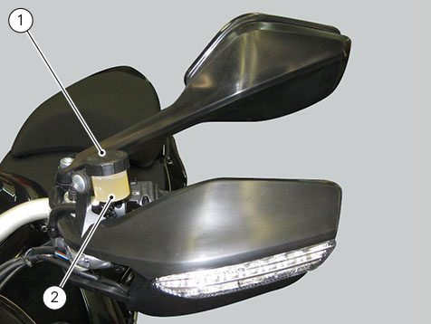
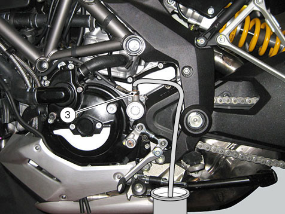
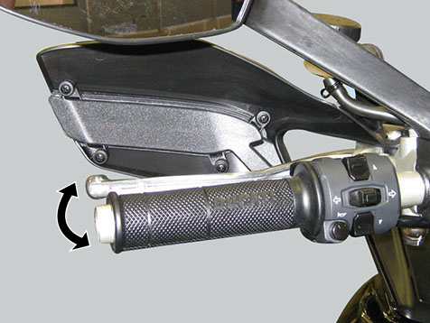
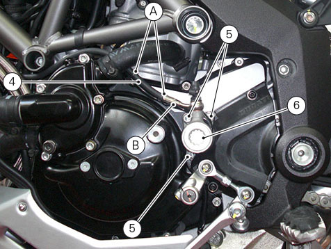
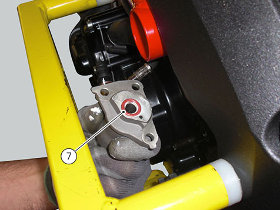
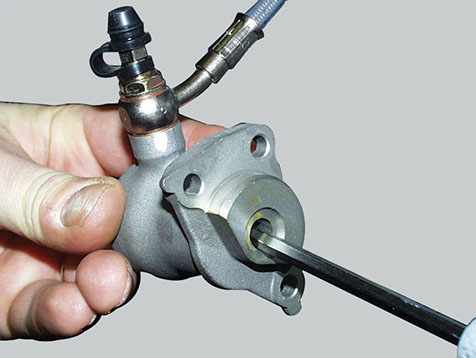

Clutch fluid is corrosive and will damage paint. Avoid contact with eyes and skin. In case of accidental contact, wash thoroughly
with water.
Remove the dust cap to expose the bleed valve (3).
Connect a clutch circuit bleeding tool to the clutch slave cylinder bleed valve (3).
Note
Follow the manufacturer's instructions when using a commercial clutch bleeding tool.
Remove the cover (1) with membrane of the clutch fluid reservoir system (2).

Open the bleed valve and pump with the bleeding tool until no more fluid emerges.
If you do not have a bleeding tool available, attach a transparent plastic tubing to the bleed valve (3) and insert the other
end of the tubing in a container of old clutch fluid placed on the floor.

Unscrew the bleed valve by a 1/4 turn.
Operate the clutch lever until all the fluid has been expelled.

To completely empty the circuit it is advisable to remove the cap of clutch recover.
Remove ties (A) and separate clutch line (4) from side stand cable (B).
Loosen screws (5) and take out clutch slave cylinder (6) keeping the O-ring (7) located inside it.


Push the piston to force out all the fluid from inside the cap.

Refit the cap and tighten the screws (5) to a torque of 10 Nm ±10%.
Tighten the bleed valve (3) to a torque of 10 Nm ±10%.
Tie clutch line (4) to side stand cable (B) and fit the latter in slot (C).